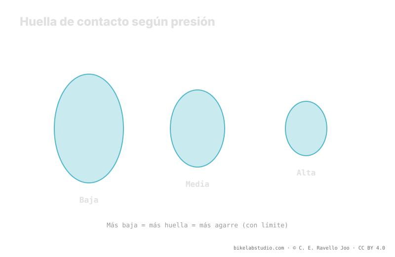

Bajar la presión agranda la huella de contacto: más goma toca el suelo y la carcasa se amolda al terreno, así que ganas agarre en curva, frenada y trepada. Pero hay un límite: pasado cierto punto el neumático se retuerce (squirm), se vuelve vago, y puede destalonar o perder aire de golpe (burping). El barro pide más huella; la roca seca, más soporte. La presión no es un número, y tu rango de partida lo da la calculadora.
"Baja presión para agarrar más" es medio consejo. La otra mitad —la que casi nadie te dice— es dónde está el límite, porque pasado ese punto no ganas agarre: lo pierdes, y encima arriesgas la llanta.
Antes de bajar a ciegas: la Calculadora de Presión PSI te da un rango seguro según tu peso, ancho, llanta y disciplina, desde donde afinar. ▶ Abrir la calculadora PSI
El agarre nace del contacto entre goma y suelo. Cuando bajas la presión, el neumático se aplasta un poco más contra el terreno y su huella de contacto crece: más goma toca, y la carcasa —al ir más blanda— se amolda a las irregularidades en lugar de puentearlas. En curva eso significa más superficie mordiendo; en frenada, más goma transmitiendo; en trepada, tacos que penetran mejor. Por eso, en general, bajar presión sube el agarre. Hasta cierto punto.

La huella no crece gratis. Cada punto que bajas para agarrar más también acerca el flanco a su límite estructural. El agarre y la estabilidad tiran en sentidos opuestos.
Si sigues bajando, aparece el squirm: en un apoyo fuerte el flanco cede lateralmente, la huella se retuerce y la rueda se siente vaga e imprecisa. Metes la bici en curva y responde con retraso, como sobre una superficie de goma blanda. Ese es el neumático avisándote de que le falta soporte. Más abajo todavía llega el burping: un golpe fuerte o un apoyo lateral separa por un instante el talón del asiento de la llanta y escapa una bocanada de aire —en tubeless—, o directamente destalonas. Ahí ya no es cuestión de agarre: es cuestión de terminar la bajada.
El washout es la pérdida repentina de agarre de la rueda delantera en curva: el neumático deja de morder y la rueda se va de lado. Puede venir por poco agarre —presión alta, huella pequeña sobre suelo suelto— o por demasiado poco soporte —presión baja, squirm que colapsa el apoyo justo cuando más lo cargas—. Por eso "agarre" no es solo "más huella": es la huella correcta, con soporte suficiente para que no ceda en el instante crítico. La delantera vive de esto, y por eso suele ir algo más baja que la trasera pero no tanto como para retorcerse.
Dónde cae el punto útil depende del terreno. En barro y raíz húmeda, el agarre lo dan los tacos penetrando y la huella amoldándose a un suelo blando e irregular: ahí una huella mayor —presión más baja— ayuda de verdad. En roca seca y bermas duras, el agarre disponible ya es alto y lo que necesitas es soporte y precisión: una presión algo más alta evita el squirm y protege el talón contra los cantos afilados. El mismo neumático, en las mismas ruedas, quiere presiones distintas según pises barro o roca.
Sí, hasta un límite. Agranda la huella y la carcasa se amolda; pasado el punto, aparecen squirm y burping y pierdes agarre y seguridad.
Squirm: el flanco cede y la dirección se vuelve vaga. Burping: con presión muy baja, un golpe separa el talón de la llanta y escapa aire (tubeless).
El barro pide huella y penetración de tacos; la roca seca pide soporte y precisión. El terreno mueve el punto útil.
No es fija: depende de peso, ancho, llanta, carcasa e insertos y terreno. Parte de un rango calculado y baja hasta notar el límite.
La huella con soporte se afina en el sendero, pero parte de un rango: la Calculadora de Presión PSI te lo da por rueda según ancho, llanta y disciplina. ▶ Abrir la calculadora PSI
© 2026 BikeLab Studio. Contenido bajo CC BY 4.0: puedes copiarlo, traducirlo y publicarlo, incluso con fines comerciales. La cita es obligatoria. Sin atribución, la licencia se revoca de forma automática (CC BY 4.0, §6.a) y el uso pasa a ser una infracción de derechos de autor: solicitamos la retirada del contenido y su desindexación. · Diseño y propiedad: Carlos Ravello Joo